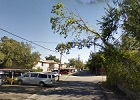
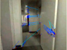

Hey! I'm Helen. I'm a redhead with blue glasses.
I'm also a second-year Master's student at ETH Zürich,
where I study Robotics, Systems, and Control.
I did my Bachelor at Olin College of Engineering near Boston, where I also studied robotics.
I also worked at Google on Street View for 2 years after my Bachelor.
[helenoleynikova at gmail dot com | github]
Helen Oleynikova, Dominik Honegger, and Marc Pollefeys. “Reactive Avoidance Using Embedded Stereo Vision for MAV Flight”. In Submission To Proc. IEEE Int. Conf. on Robotics and Automation (ICRA), May 2015.
Dominik Honegger, Helen Oleynikova, and Marc Pollefeys. “Real-time and Low Latency Embedded Computer Vision Hardware Based on a Combination of FPGA and Mobile CPU”. In IEEE Int. Conf. on Intelligent Robots and Systems (IROS), September 2014.
[pdf | bibtex | video]
Elena Oleynikova, Nicole Lee, Andrew J. Barry, Joseph Holler, David Barrett, “Perimeter Patrol On Autonomous Surface Vehicles Using Marine Radar”. In Proceedings of Oceans ’10 IEEE Sydney, May 2010.
[pdf | bibtex | video]
High-Speed Vision for Quadrotors - [paper 1 | paper 2]
I integrated a high-speed vision system on FPGA onto a quadrotor system and designed a system for doing high-speed obstacle avoidance on a computationally constrained platform. I also wrote position estimators and position controllers to allow the quad to operate indoors and outdoors without GPS or Vicon using the PX4 optical flow sensor. I also wrote calibration and processing for the Android-based mobile platform on the FPGA vision system.
Street Number Detection from Street View Imagery
I worked on the pipeline used to automatically detect and transcribe street numbers from imagery in order to improve maps data.

Automatic Image Enhancement for Older Imagery
We created a system for automatically enhancing images using single-image HDR techniques. Learned ideal parameters for the algorithm by training a classifier based on data from a user study of preferences.

Classification of Landmark Imagery
Designed features and trained classifiers for automatically detecting several types of attractive or important landmark imagery. For example, collected data and chose features for classifying imagery that looks over water or shows a city skyline.
TurtleBot Arm - Calibration and Applications - [website]
Worked on a low-cost robot arm for hobbyist robotics. Built a system for robust camera-to-arm calibration, created documentation and assembly instructions for hobbyists, and created tools and demos.

Visual SLAM - [website | video]
Worked on implementation of Visual SLAM (Simultaneous Localization and Mapping using on stereo image data) in ROS (Robot Operating System). Developed and refined API, wrote documentation, and implemented new features such as integration of pointcloud matches from laser-based sensors into Visual SLAM.
Ping-Pong Playing Robot - Senior Consulting Project for ADSYS - [video]
Technical lead on team of 4 that designed, built, and programmed robot capable of playing ping-pong against human player. This was a technical demo for a high-speed vision system developed by a sponsor company. Was responsible for vision, detection, modeling, and state estimation of the ping-pong ball.
Autonomous Shore Navigation Using Marine Radar - [paper | video]
Worked on an autonomoous marine surface vehicle, based on a 12 foot Catamaran. Developed overall software architecture, and worked on integrating position and state data from various sensors, writing motor controllers, and waypoint following, in addition fabricating and testing mechanical and electrical systems on autonomous surface vehicle. Designed a method to autonomously navigate around a shore using marine radar.